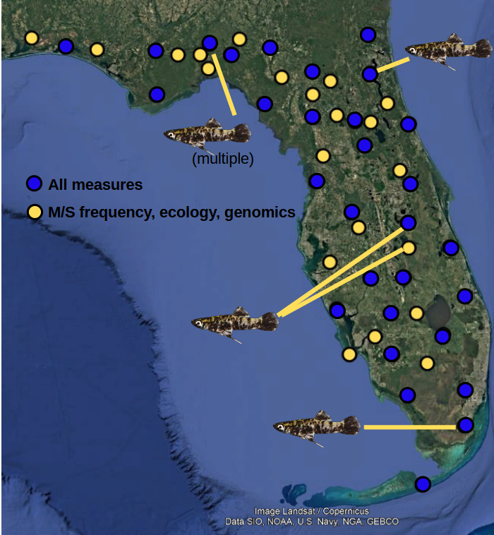
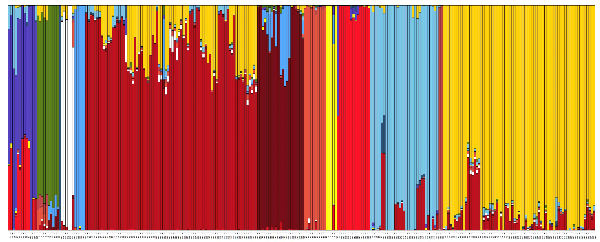
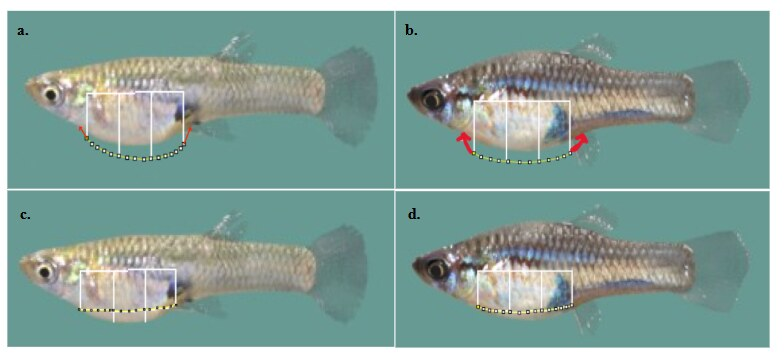

Research
How variation becomes evolutionary change
Research in the Culumber Lab examines how environmental variation, behavior, and interactions among individuals shape evolutionary processes. Using livebearing fishes—especially the eastern mosquitofish, Gambusia holbrooki—we combine geographically extensive field studies, behavioral experiments, ecological data, and population genomics. Our current work connects individual behavior and movement with population-level gene flow, investigates how environmental selection maintains adaptive polymorphism, and examines how the genotypes of social partners influence behavioral and evolutionary outcomes.
Current research
Major research directions
01
Behavior, movement, and gene flow
Behavior varies among individuals and populations, but whether this variation affects movement across landscapes and ultimately shapes gene flow remains poorly understood. We examine geographic variation in behavior and correlations among behavioral traits using consistent methods across eastern mosquitofish populations.
We then test whether individual behavior predicts movement, whether ecological conditions explain differences among populations, and whether behaviorally mediated movement corresponds with genomic patterns of gene flow.


02
Environmental selection and adaptive polymorphism
The persistence of genetic variation within natural populations is a longstanding problem in evolutionary biology. Male eastern mosquitofish occur as either the common silver phenotype or a rarer melanic phenotype whose distribution varies geographically.
We test whether the presence and frequency of melanic males are associated with predator communities and whether melanic and silver males experience different attack rates under natural conditions.
03
Social genetic effects and behavioral evolution
An individual’s phenotype can be influenced by the genes carried by its social partners. These indirect genetic effects may change both the expression of behavioral traits and how those traits respond to selection.
We manipulate the social environment experienced by individual fish to test whether exposure to different male morphs changes behavior, social-network structure, and patterns of behavioral evolution.
Broader interests
Questions that connect our work
Thermal adaptation and evolutionary diversification
Temperature influences physiological performance, behavior, reproduction, and survival. We are interested in how thermal adaptation contributes to the maintenance of genetic variation, divergence among populations, and biological diversification.
Our research connects experimental measures of organismal performance with geographic and evolutionary patterns in Xiphophorus and other livebearing fishes.
Behavioral ecology and sexual selection
We study how behavioral variation arises, how it is maintained, and how it affects ecological and evolutionary processes. Our work includes activity, exploration, risk taking, cognition, social behavior, dispersal, mating preferences, coloration, social status, and sexual conflict.
We test the importance of sexual selection relative to ecological and physiological sources of selection rather than assuming that any one process predominates.
